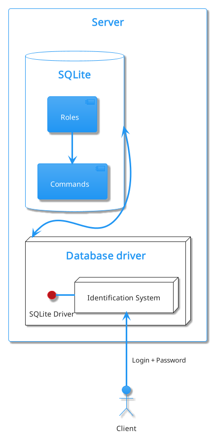

# Введение В наше временя оборот информации в бизнес сфере огромен, отцифрованно практически всё. Большая часть информации передаётся по средствам компьютерных сетей, в частности глобальнай – Интернет.
Технология Интернет приспособленна для передачи любого вида закодированной информации, чем пользуется в преимуществе большая часть бизнес отраслей для получения своей прибыли. Но во время развития Интернет появилась такая ниша как Взломщики, люди посягающии на не санкционированное получения доступа к ресурсам подключенных к Интернет. Вследствии начали стремительно развиваться технологии Криптографии , которые существующие еще со времён древнего Рима, и других методов борьбы с Взломщиками и не только.
Взломищакам могут быть интересны любые ресурсы: журналы Бухгалтерии, системы управления предприятеим и т.д.
Подходя к теме о ведении бизнеса в сфере ЧОП многие подозрительные личности могут быть заинтересованн в получении запланированных маршрутов инкосации, адресса жительства сотрудников… Для пресечения перечисленных выше махинаций можно полностью отказаться от ведения своей деятельности в Интернет.
Если это не выход – тогда необходимо развертывание системы защиты, чем мы и займемся в пределах данной работы. Также самым современным решением будет использование Blockchain – децентрализованный метод хранения данных, но данный вариант не будет рассматриваться, так как всё сильно усложняет и, скорее всего, по просту не приемлем.
Решение будет выполненно в несколько шагов:
## Организация ЧОП Охранное предприятие занимается охраной какой либо частной или государственной собственности.
ЧОП, чаще всего состоит из трех подразделений:
Если говорить о предоствляемых услугах более конкретно, то ЧОП для потребителя предлогает:
# Описание средстд разработки В данном разделе будут рассмотрены средства разработки, используемые мной при создании ПС для ЧОП.
## Утилиты для разработки баз данных
### SQLite v3.35.5 stable SQLite — компактная встраиваемая СУБД. Исходный код библиотеки передан в общественное достояние. Данная СУБД работает в безсерверной конфигурации. Если сравнивать с другими СУБД, то в равных условиях запись SQLite осуществляет медленее на 20-30% чем другие СУБД, но чтение превосходит другие на 40-50%. SQLite не имеет привелегий, только систему авторизации, но это и не нужно в моем проекте, об этом будет сказано позже. > Примичание: > Библиотека SQLite не будет использована в чистом виде, а в составе Qt v6.2.4
### SQLiteBrowser v3.12.2 Удобный FOSS браузер баз данных SQLite, использованный для отладки.
### DBVisualizer v12.1.8 Проприетарная утилита для работы с разными СУБД, использован для генерации графа таблиц составленной базы данных ЧОП.
### Qt v6.2.4 Qt - один из самых популярных и больших фреймворков c++ на рынке. Важная характеристика Qt - переносимость, т.к. я работаю на Linux.
## Системы сборки и компиляторы
### CMake v3.22.3 Система сборки c++. Сборка проекта и передача более низкоуровневому средству.
### Ninja c1.10.2 Еще одна система сборки, только уже более низкого уровня, чем CMake. Передача исходного кода на компиляцию.
### clang v13.0.1 Компилятор семейства C. Без коментариев.
### QtCreator v6.0.2 IDE от компинии The Qt Company, использованный только как средство отладки и создания скелетов форм пользовательского интерфейса.
### VIM v8.2 Моя любимая IDE, в своей основе так же прост как и каноничный “блокнот” в Windows, только с максимальной степенью кастомизации. Главное достоинство, по моему мнению, - это управление без использования мыши и возможность настройки управляющих комбинаций максимально удобно, что сокращает время на бесполезное перемещение рук по рабочему пространству.
Plug 'https://github.com/xolox/vim-misc' " auto load
Plug 'https://github.com/xolox/vim-session' " session manager
Plug 'wakatime/vim-wakatime' " wakatime.com
Plug 'SirVer/ultisnips' " snippets
Plug 'https://github.com/honza/vim-snippets' " snippents files
Plug 'https://github.com/pangloss/vim-javascript.git' " javascript extension
Plug 'vim-airline/vim-airline' " status line
Plug 'vim-airline/vim-airline-themes' " themes
Plug 'vim-scripts/AfterColors.vim' " themes
Plug 'rafi/awesome-vim-colorschemes' " themes
Plug 'sonph/onehalf', { 'rtp': 'vim' } " theme
Plug 'https://github.com/sjl/badwolf' " theme
Plug 'https://github.com/joshdick/onedark.vim' " theme
Plug 'https://github.com/plasticboy/vim-markdown' " markdown format support
Plug 'ryanoasis/vim-devicons' " icons support
Plug 'https://github.com/Yggdroot/indentLine'
Plug 'ycm-core/YouCompleteMe' " code completer
Plug 'rdnetto/YCM-Generator', { 'branch': 'stable'}
Plug 'tpope/vim-commentary' " commentary shortcuts
Plug 'm-pilia/vim-pkgbuild' " archlinux AUR PKGBUILD files support
Plug 'https://github.com/tpope/vim-surround' " html-like tags handle utils
Plug 'https://github.com/octol/vim-cpp-enhanced-highlight' " cpp syntax hilightinght
Plug 'ctrlpvim/ctrlp.vim' " file finder
Plug 'preservim/nerdtree' " dir tree dock
Plug 'https://github.com/preservim/tagbar'
Plug 'vim-scripts/bufkill.vim' " exit buffers without exiting vim
Plug 'jreybert/vimagit' " git support
Plug 'https://github.com/ap/vim-css-color' " HEX-colors hilighting
Plug 'https://github.com/matze/vim-move' " code moving
Plug 'https://github.com/junegunn/vim-easy-align' " fast text aligning
Plug 'https://github.com/ervandew/supertab'
Plug 'https://github.com/jiangmiao/auto-pairs' " completing pairs
Plug 'https://github.com/rhysd/vim-clang-format' " auto formating
Plug 'honza/vim-snippets' " set of snippets
Plug 'https://github.com/godlygeek/tabular' " tab extender
Plug 'https://github.com/junegunn/vim-easy-align'
Plug 'https://github.com/fadein/vim-FIGlet' " figlet
Plug 'https://github.com/scrooloose/syntastic'### Plantuml v1.2021.16 Средство создания UML диаграм. Использовано для визуализации объектов и просецссов.
### BASH v5.1.16 Bourne Again Shell - интерпритатор, использован для автоматизации некотерых процессов. > Примечание: > Оглавления данной работы было автоматически сгенерерованно данным bash-скриптом:
cat "$1" > "$1".indexed
>index
i=(-1 1)
prevLen=0
while read -r line; do
hash="$(md5sum <<< "$line" | cut -d ' ' -f 1)"
printf "<a id=\"%s\"></a>\n%s\n" "$hash" "$line" > tmp
sed "/$line/ {
x
r /home/xewii/Documents/TIT/ZXC/tmp
}" "$1".indexed > "$1".indexed.tmp
mv "$1".indexed.tmp "$1".indexed
hdrLen=$(awk -F'#' '{print NF-1}' <<< "$line")
hdrTxt=$(echo "${line//#/}")
(( $hdrLen > 1 )) && for (( j=1; j<$hdrLen*4; j++ )); do printf ' '; done
(( $prevLen < $hdrLen )) && i[$hdrLen]=1
printf "%d.[%s](#%s)\n" ${i[$hdrLen]} "$hdrTxt" "$hash"
prevLen=$hdrLen
let i[$hdrLen]++
done <<< "$(grep --color=no -E "^#+" "$1")" > index
mv "$1".indexed tmp
printf "# Содержание\n" > "$1".indexed
cat index >> "$1".indexed
cat tmp >> "$1".indexed
rm tmp
rm index### Valgrind v3.18 Утилита профилирования и отладки программы, использовано в основном для обнаружения утечек памяти.
### GIT v2.35.1 GIT - система контроля версий, сомо о себе говрит. Использовался в основном для перенесения кода между машинами и как средство дистрибъюции.
# Разработы базы данных ЧОП База данных ЧОП в пределах данной работы - головная сущность, вокрук которой будет строится весь функционал. База данных будет существовать под управлением SQLite.
## Таблицы В компанию, как известно, входит некоторое количество сотрудников, по этому, я создаю таблицу Users. Название выбрано таковым, потому что она будет содержать данные учетных записей сотрудников и клиентов ЧОП.
CREATE TABLE
"Users"("id" INTEGER NOT NULL UNIQUE,
"name" TEXT NOT NULL,
"entryDate" TEXT NOT NULL,
"role_id" INTEGER NOT NULL,
"wapon_id" INTEGER,
"email" TEXT UNIQUE,
"login" TEXT NOT NULL UNIQUE,
"password" BLOB NOT NULL UNIQUE,
"salt" BLOB NOT NULL,
"image" BLOB,
FOREIGN KEY("wapon_id") REFERENCES "Wapons"("id")ON DELETE RESTRICT,
FOREIGN KEY("role_id") REFERENCES "Roles"("id")ON DELETE RESTRICT,
PRIMARY KEY("id" AUTOINCREMENT))Таблица содержит данные для идентификации:
Пароль не храниться в открытов виде, а зашифорован с использованием динамической соли по алгоритму “Prefered salt algorithm”, более подробно будет расмотрен далее.
Как видно, таблица Users зависит от таблиц Roles и Wapons, собственно вот они:
CREATE TABLE
"Roles"("id" INTEGER NOT NULL UNIQUE,
"name" TEXT NOT NULL UNIQUE,
"commands_id" INTEGER NOT NULL,
"payMultipler" DECIMAL(10, 3) NOT NULL,
"payPeriod" INTEGER NOT NULL,
FOREIGN KEY("commands_id") REFERENCES
"roleCommands"("role_id")ON DELETE RESTRICT,
PRIMARY KEY("id"))Роль определяет какие данные и соответственно команды можешь выполнять на сервере. Ссылается на таблицу roleComands - это SQL массив с ID команд, которые может выполнять пользователь с данной ролью, по поэтому я и отказался от других, более тяжелых СУБД, т.к. все необходимые действия делегируются на Сервер, что будет рассмотрено далее, от СУБД требуется только хранить данные и извлекать их. Связаная таблица roleCommands:
CREATE TABLE
"roleCommands"("role_id" INTEGER NOT NULL,
"command_id" INTEGER NOT NULL,
FOREIGN KEY("role_id") REFERENCES
"Roles"("id")ON DELETE RESTRICT)Таблица Wapons:
CREATE TABLE
"Wapons"("id" INTEGER NOT NULL UNIQUE,
"employee_id" INTEGER UNIQUE,
"name" TEXT NOT NULL,
"ammo" INTEGER NOT NULL,
"price" DECIMAL(10, 3) NOT NULL,
"ammoPrice" DECIMAL(10, 3) NOT NULL,
"image" BLOB,
FOREIGN KEY("employee_id") REFERENCES
"Users"("id")ON DELETE RESTRICT,
PRIMARY KEY("id"))Каждая запись в таблице Wapons - это еденица зарегестрированного оружия, в полной мере описывающяя необходимые характеристики для ЧОП.
Так как организация имеет свои расходы и доходы, нам нужно сохранять эти данные. Таблица Accounting:
CREATE TABLE
"Accounting" ("id" INTEGER NOT NULL UNIQUE,
"accountingType_id" INTEGER NOT NULL,
"pay" DECIMAL(10, 3) NOT NULL,
"date" TEXT NOT NULL,
FOREIGN KEY("accountingType_id")
REFERENCES "AccountingType"("id") ON DELETE RESTRICT,
PRIMARY KEY("id") )Зависит от таблицы AccountingType, описывающей какого рода транзакция была совершена.
CREATE TABLE
"AccountingType" ("id" INTEGER NOT NULL UNIQUE,
"name" TEXT NOT NULL UNIQUE,
PRIMARY KEY("id","name") )ЧОП получает доход от контрактов, по этому была составлена таблица Contracts:
CREATE TABLE
"Contracts"("id" INTEGER NOT NULL UNIQUE,
"assignedEmployees_id" INTEGER NOT NULL,
"customer_id" INTEGER NOT NULL,
"objectType_id" INTEGER NOT NULL,
"objectAddress" TEXT NOT NULL,
"objectWayPoint" TEXT, "date" TEXT NOT NULL,
"expirationDate" TEXT NOT NULL,
"weekends" TEXT NOT NULL,
FOREIGN KEY("customer_id") REFERENCES
"Users"("id")ON DELETE RESTRICT,
PRIMARY KEY("id"),
FOREIGN KEY("assignedEmployees_id") REFERENCES
"AssignedEmployees"("employee_id") ON DELETE RESTRICT,
FOREIGN KEY("objectType_id") REFERENCES
"objectType"("id")ON DELETE RESTRICT)Запись в таблице Contracts это сделка вида, описанного в связаной таблице objetType. Таблица objetType:
CREATE TABLE
"objectType" ( "id" INTEGER NOT NULL UNIQUE,
"name" TEXT NOT NULL UNIQUE,
"price" DECIMAL(10, 3) NOT NULL,
PRIMARY KEY("id") )Запись в данной таблице описывает объект контракта, где указывается базавая цена за период оплаты(payPeriod) исполнителя/исполнителей контракта(assignedEmployees_id). Для привязки нескольких сотрудников, была создана еще одна таблица AssignedEmployees, являющейся массивом.
CREATE TABLE "AssignedEmployees" (
"id" INTEGER NOT NULL,
"employee_id" INTEGER NOT NULL,
"guiltyPercent" DECIMAL(10, 3) NOT NULL,
"usedAmmo" INTEGER,
FOREIGN KEY("employee_id") REFERENCES
"Users"("id") ON DELETE RESTRICT,
PRIMARY KEY("id") )Для создания контракта в данной таблице нужно только 2 поля - id, employee_id. Так так во время исполнения может произойти какой то ицедент, то была создана таблица Accidents:
CREATE TABLE
"Accidents" ("id" INTEGER NOT NULL UNIQUE,
"name" TEXT NOT NULL,
"contract_id"
INTEGER NOT NULL,
"usedAmmoCount" INTEGER,
"damagePrice" DECIMAL(10, 3),
"assignedEmployees_id" INTEGER,
FOREIGN KEY("contract_id") REFERENCES "Contracts"("id") ON DELETE RESTRICT,
FOREIGN KEY("assignedEmployees_id") REFERENCES "AssignedEmployees"("id") ON DELETE RESTRICT,
PRIMARY KEY("id") )Описывает проишествия, произошедшие во время исполнения контракта. Если у нас есть контракты, описывающие некую деятельность с учетом выходных и рамок начала и окончания службы, то можно было бы ускорить вычисление рабочего времени по дням с помощью препроцессинга данных из записи Contracts. Таблицей, в которую сохраняются транслированные данные является - DutySchedule:
CREATE TABLE
"DutySchedule" ( "emploee_id" INTEGER NOT NULL,
"day" INTEGER NOT NULL
FOREIGN KEY("emploee_id") REFERENCES "Users"("id") ON DELETE RESTRICT )day - это 64х битная цыфра со знаком в формате UNIX time(secs since epoch).
# Разработка архитектуры приложения Приложение для взаимодействия с моделью ЧОП, построенной ранее, должно предоставлять функционал для реализации всех описанных процессов взаимодействия с моделью ЧОП.
## Основа Основной функцией приложения, как понятно из темы курсовой работы, будет обеспечение безопасности данных. Исходя из этого в голову приходит идея организовать клиент-серверную архитектуру приложения, но это не главная причина почему выбрана такая архитектура. Основная причина - необходимость принимать заказы от клиентов, предоставить им функционал для удобного взаимодействия с персоналом ЧОП, но по большей части он будет взаимодействовать с клавиатурой. И для персонала ЧОП тоже будет намного удобнее и быстрее использовать унифицированные методы итерации с базой данных и самой организацией.
## Обращение к базе данных Как было сказано ранее, СУБД не будет управлять системой привелегий, этим будет заниматься другой код. Система, которую я разработал основана на ролях, так же как и в обычных “умных” СУБД, к которым привязано некоторое количество возможных к исполнению команд. 
### Система безопасности Для обеспечения более высокого уровня защиты команды и роли будут вшиты в программу. При каждом старте будет проверятся валидность первоначальных данных и имеющихся на данный момент в базе данных. Также, как мера безопасности к ПС будут предложены хеш суммы исполняемых файлов.
#### Система идентификации и авторизации При регистрации нового пользователя создается новая запись в таблице Users, все поля, короме поля password сохраняются в неизменнов виде. password сохраняется в захешированном виде при использовании хэш функции sha512 с использование динамической соли.
Алгоритм создания соли:
Алгоритм хэширования пароля:
Данный алгорит и выбраная хэш функция ограничивают максимальную длину пароля до 64 символов. Длина соли была вабрана 32 байтная. Соль сохраняется вместе с паролем, чтобы обеспечить возможность идентификации.
Для идентификации проводится сравнивание значение пароля из базы данных с переданным в функцию шифрования с солью данной записи пользователя пароля.
#### Система команд Проанализировав информационные потоки и требования ЧОП я составил 22 команды, в исходном коде объявление команд выглядит вот так:
// id, name, executor
#define COMMANDS_MAP(XX) \
XX( 0, MAKE_CONTRACT, exec_make_contract ) \
XX( 1, MAKE_DUTY_SCHEDULE, exec_make_duty_schedule ) \
XX( 2, REGISTER_ACCIDENT, exec_register_accident ) \
XX( 3, REGISTER_EMPLOYEE, exec_register_employee ) \
XX( 4, REGISTER_CUSTOMER, exec_register_customer ) \
XX( 5, REGISTER_OBJECT_TYPE, exec_register_object_type) \
XX( 6, REGISTER_WAPON, exec_register_wapon ) \
XX( 7, ASSIGN_WAPON, exec_assign_wapon ) \
XX( 8, PAY_AMMO, exec_pay_ammo ) \
XX( 9, PAY_EMPLOYEE, exec_pay_employee ) \
XX( 10, PAY_ACCIDENT, exec_pay_accident ) \
XX( 11, EDIT_OBJECT_TYPE, exec_edit_object_type ) \
XX( 12, UPDATE_ROLE, exec_update_role ) \
XX( 13, GET_USER_INFO, exec_get_user_info ) \
XX( 14, GET_ACCIDENT_DETAILS, exec_get_accident_details) \
XX( 15, GET_ACCOUNTING_ENTRY, exec_get_accounting_entry) \
XX( 16, GET_OBJECT_DETAILS, exec_get_object_detalils) \
XX( 17, GET_ROLE_DETAILS, exec_get_role_details ) \
XX( 18, GET_WAPON_DETAILS, exec_get_wapon_details ) \
XX( 19, GET_DUTY_SCHEDULE, exec_get_duty_schedule ) \
XX( 20, CREATE_TABLE, exec_create_table ) \
XX( 21, IDENTIFY, exec_identify ) \# Заключение Вот и сказочки конец, кто дочитал - тот молодец.
# Список литиратуры 1. https://wiki.qt.io - документация Qt 2. https://www.sqlite.org/ - документация SQLite